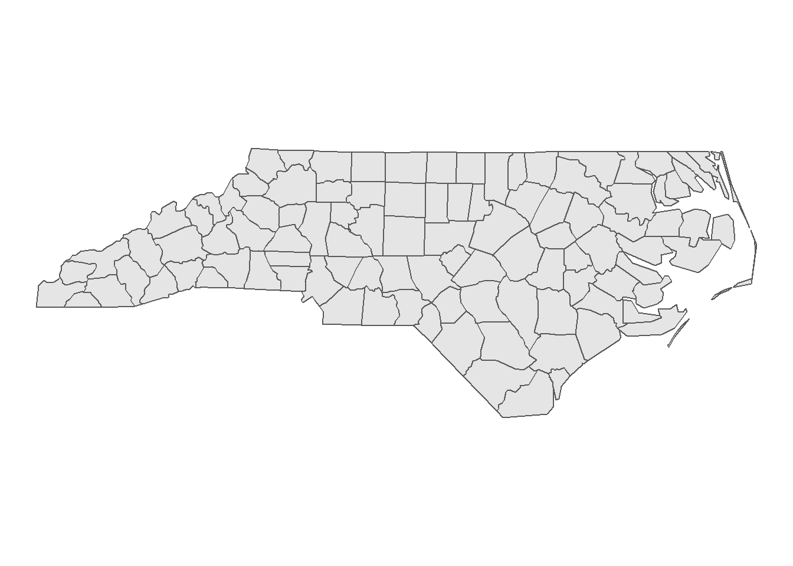

5 Toplogy Rules
in ArcGIS, you create a topology rule by first creating a Feature Dataset in a Geodatabase, and then adding one or more Topology Rules to that Feature Dataset. In R, you can check topology using the DE-9IM together with st_relate().
5.1 Polygons
5.1.1 Must not overlap
In context of DE-9IM, this is a simple case. The polygon interiors should not overlap at all, everything else does not matter. Interior-Interior is the first of the 9 intersections, so the the intersection matrix as a code string would be: 2********. In the case of the example below:
set.seed(10)
nrows <- 10
circs <- data.frame(
id = 1:nrows,
x = rnorm(nrows),
y = rnorm(nrows)
) %>%
st_as_sf(coords = c(2,3)) %>%
st_buffer(0.25)circsplot <- ggplot(circs) +
geom_sf(fill = "blue",alpha = 0.3) +
geom_sf_text(aes(label = id)) +
theme_void()
circsplot
This gives us a sparse matrix as an output, which is esentially a list with the same length as the x, where each position is a vector of integers with the indicies of the features in y (which may equal to x) where the pattern matches.
## Sparse geometry binary predicate list of length 10, where the predicate was `relate_pattern'
## 1: 1, 2, 5
## 2: 1, 2, 4, 5, 10
## 3: 3
## 4: 2, 4
## 5: 1, 2, 5
## 6: 6
## 7: 7
## 8: 8
## 9: 9
## 10: 2, 10Setting sparse = FALSE returns a crossmatrix of all combinations.W
crossmatrix <- st_relate(circs,pattern = "2********",sparse = FALSE)
crossmatrix[1:6,1:6] # only showing 6 since this prints nicely## [,1] [,2] [,3] [,4] [,5] [,6]
## [1,] TRUE TRUE FALSE FALSE TRUE FALSE
## [2,] TRUE TRUE FALSE TRUE TRUE FALSE
## [3,] FALSE FALSE TRUE FALSE FALSE FALSE
## [4,] FALSE TRUE FALSE TRUE FALSE FALSE
## [5,] TRUE TRUE FALSE FALSE TRUE FALSE
## [6,] FALSE FALSE FALSE FALSE FALSE TRUE5.1.2 Must not have gaps
Lets cosider the North Carolina Dataset for this question.
nc = st_read(system.file("shape/nc.shp", package="sf"), quiet = TRUE)
ggplot(nc) +
geom_sf() +
theme_void()
The first task is to dissolve all adjecent polygons together
## Geometry set for 1 feature
## geometry type: MULTIPOLYGON
## dimension: XY
## bbox: xmin: -84.32385 ymin: 33.88199 xmax: -75.45698 ymax: 36.58965
## epsg (SRID): 4267
## proj4string: +proj=longlat +datum=NAD27 +no_defsIf the output is a multipolygon as it is the case here, it’s bad news, there are gaps. To check which parts are disconnected from each other, we can cast the multipolygon to a polygon (in ArcGIS Terms “Multipart to singlepart”), add a rowname for each part and colour it by rowname.
nc_singlepart <- nc_union %>%
st_cast("POLYGON")%>%
st_sf() %>%
mutate(id = 1:n())
ggplot(nc_singlepart) +
geom_sf(aes(fill = factor(id))) +
labs(fill = "id") +
theme_void()
But maybe we can live with these Islands in the state of North Carolina, since this is in fact an accurate representation of reality (the gaps are a result of the Atlantic Ocean). We must now check whether the individual geometries have holes. Here we can make use of the way polygons are defined in sf:
geometry with a positive area (two-dimensional); sequence of points form a closed, non-self intersecting ring; the first ring denotes the exterior ring, zero or more subsequent rings denote holes in this exterior ring
This means that the length of each Polygon geometry must be 1. A length of 2 or more would mean that there are one (or more) holes in the geometry. We can do this with any of the functions from the apply family, I prefer purrr:
## [1] TRUE TRUE TRUE TRUE TRUE TRUELet’s see what happens if we cut a hole into the polygons
holes <- nc_singlepart %>%
st_union() %>%
st_centroid() %>%
st_buffer(0.5)
nc_holes <- st_difference(nc_singlepart,holes)
ggplot(nc_holes) +
geom_sf() +
theme_void()## [1] TRUE TRUE TRUE TRUE FALSE TRUE5.1.3 Contains point

5.1.4 Contains one Point
5.1.5 Must be covered by feature class of

5.1.6 Boundary must be covered by

5.1.7 Must not overlap with

5.1.8 Must be covered by

5.1.9 Area boundary must be covered by boundary of
5.1.10 Must cover each other